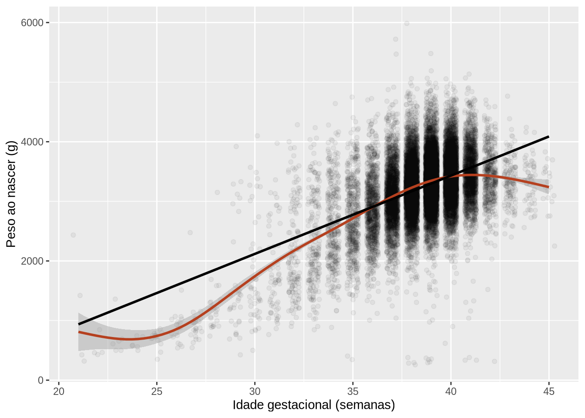
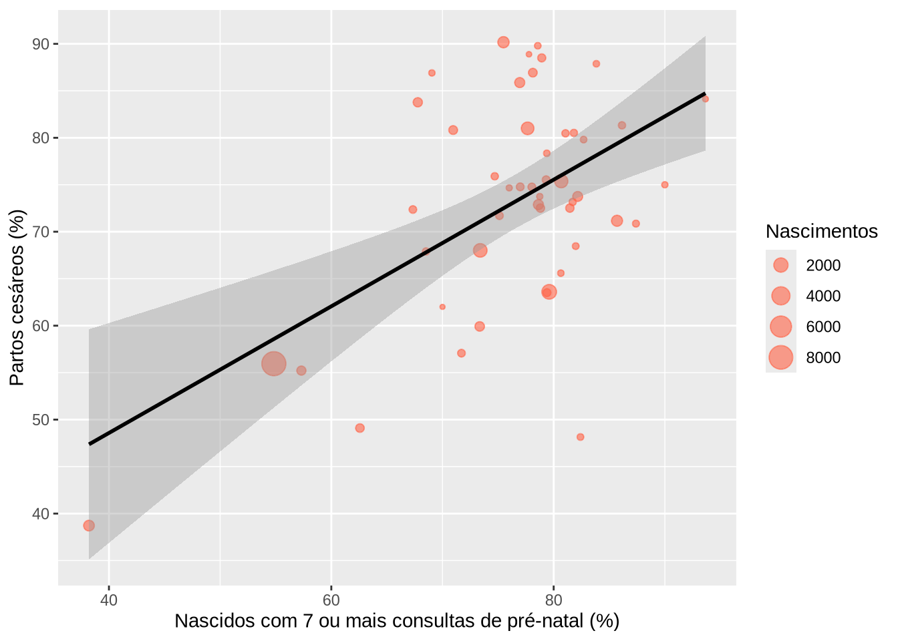

library(tidyverse)
library(here)
source(here("scripts", "preparar-sinasc.R"))14 Correlação e regressão linear simples
Encontro previsto: 7 · Pré-requisitos: Capítulo 13 · Pacotes: R base (stats), ggplot2, broom, gtsummary
Objetivos de aprendizagem
Ao final deste capítulo, espera-se que o estudante seja capaz de explorar graficamente a relação entre duas variáveis quantitativas; calcular, testar e interpretar os coeficientes de correlação de Pearson e de Spearman; distinguir correlação de causalidade e reconhecer a falácia ecológica; ajustar um modelo de regressão linear simples e interpretar intercepto, coeficiente angular, coeficiente de determinação e intervalos de confiança; obter predições com intervalos; e avaliar os pressupostos do modelo por meio dos resíduos.
No capítulo anterior, comparamos uma variável quantitativa entre grupos. Agora, as duas variáveis são quantitativas, e a pergunta é como uma se relaciona com a outra. Quanto o peso ao nascer aumenta, em média, a cada semana a mais de gestação? Municípios com mais pré-natal adequado têm também mais cesáreas? A correlação mede a força dessas relações, e a regressão linear descreve como uma variável muda em função da outra.
14.1 Relações entre variáveis quantitativas
O primeiro passo é sempre o gráfico de dispersão. Ele mostra a direção da relação (os valores crescem juntos ou um cresce enquanto o outro diminui), sua forma (reta, curva ou nenhuma) e sua força (os pontos estão próximos de uma linha ou muito espalhados). Ele também revela valores extremos que podem distorcer as medidas numéricas, como vimos no exemplo de Anscombe, no Capítulo 10.
ggplot(nascidos_analise, aes(x = semagestac, y = peso)) +
geom_jitter(alpha = 0.05, width = 0.3) +
geom_smooth(color = "#b5401f") +
geom_smooth(method = "lm", color = "black", se = FALSE) +
labs(x = "Idade gestacional (semanas)", y = "Peso ao nascer (g)")
A curva suavizada, feita por geom_smooth() sem argumentos, acompanha os dados sem impor uma forma. Já a reta, obtida com method = "lm", é a que melhor se ajusta aos pontos segundo o critério que veremos adiante. A comparação das duas mostra que a relação é crescente, mas não é uma reta em toda a faixa: o peso aumenta rapidamente entre cerca de 28 e 40 semanas e depois praticamente se estabiliza. Essa observação vai orientar o ajuste do modelo.
14.2 Coeficientes de correlação
O coeficiente de correlação de Pearson (\(r\)) mede a força da relação linear entre duas variáveis. Ele varia de -1 a 1. Valores próximos de 1 indicam relação linear crescente forte, valores próximos de -1 indicam relação linear decrescente forte, e valores próximos de zero indicam ausência de relação linear, o que não exclui outros tipos de relação, como uma curva em forma de U.
O coeficiente de correlação de Spearman (\(\rho\)) é calculado da mesma forma, mas usando as posições (postos) dos valores ordenados, e não os próprios valores. Ele mede se as duas variáveis crescem juntas, mesmo que não em linha reta, e é menos sensível a valores extremos.
No R, os dois são calculados com cor(). O argumento use = "complete.obs" exclui os registros com valores ausentes, e method escolhe o coeficiente.
cor(nascidos_analise$peso, nascidos_analise$semagestac, use = "complete.obs")
#> [1] 0.4815687
cor(nascidos_analise$peso, nascidos_analise$semagestac, use = "complete.obs",
method = "spearman")
#> [1] 0.3396929A correlação de Pearson é moderada e positiva. A de Spearman é menor, o que pode surpreender. A explicação está no gráfico: a maior parte dos nascimentos se concentra entre 37 e 41 semanas, faixa em que o peso quase não muda com a idade gestacional. O coeficiente de Spearman dá o mesmo peso a todas as posições, e por isso é muito influenciado por essa faixa. O de Pearson, por outro lado, é muito influenciado pelos poucos prematuros extremos, com valores distantes da média. Esse exemplo mostra que um único número não substitui o gráfico.
A função cor.test() testa a hipótese nula de correlação igual a zero e dá o intervalo de confiança para o coeficiente de Pearson. Vamos usá-la para a relação entre o peso ao nascer e a idade da mãe.
cor.test(~ peso + idademae, data = nascidos_analise)
#>
#> Pearson's product-moment correlation
#>
#> data: peso and idademae
#> t = 7.7967, df = 27026, p-value = 6.582e-15
#> alternative hypothesis: true correlation is not equal to 0
#> 95 percent confidence interval:
#> 0.03547133 0.05926159
#> sample estimates:
#> cor
#> 0.04737318A correlação é estatisticamente diferente de zero, mas muito fraca, abaixo de 0,1. É mais um caso em que o tamanho da amostra torna significativa uma relação de pouca importância prática. Não há regras universais para classificar a força de uma correlação, mas valores abaixo de 0,3 costumam ser considerados fracos, e acima de 0,7, fortes.
Correlação não é causalidade
Uma correlação entre duas variáveis pode surgir porque uma causa a outra, porque as duas dependem de uma terceira variável, ou simplesmente por acaso. Vamos calcular, para cada município, a proporção de partos cesáreos e a proporção de nascidos vivos cujas mães fizeram sete ou mais consultas de pré-natal. Para evitar proporções muito instáveis, mantemos apenas os municípios com pelo menos 50 nascimentos.
municipios <- nascidos_analise |>
filter(!is.na(parto), !is.na(consultas)) |>
group_by(munresnome) |>
summarise(
nascimentos = n(),
perc_cesarea = mean(parto == "Cesáreo") * 100,
perc_pre_natal = mean(pre_natal_7mais) * 100
) |>
filter(nascimentos >= 50)
cor.test(~ perc_cesarea + perc_pre_natal, data = municipios)
#>
#> Pearson's product-moment correlation
#>
#> data: perc_cesarea and perc_pre_natal
#> t = 4.3513, df = 46, p-value = 7.457e-05
#> alternative hypothesis: true correlation is not equal to 0
#> 95 percent confidence interval:
#> 0.3022248 0.7144987
#> sample estimates:
#> cor
#> 0.5399893ggplot(municipios, aes(x = perc_pre_natal, y = perc_cesarea)) +
geom_point(aes(size = nascimentos), alpha = 0.6, color = "#ff6347") +
geom_smooth(method = "lm", color = "black") +
labs(x = "Nascidos com 7 ou mais consultas de pré-natal (%)",
y = "Partos cesáreos (%)", size = "Nascimentos")
A correlação entre os municípios é positiva e moderada, de 0,54. Seria um erro, porém, concluir que o pré-natal leva à cesárea, ou que cada mãe que faz mais consultas tem mais chance de cesárea na mesma proporção. Os municípios diferem em muitas características ao mesmo tempo, como a oferta de serviços de saúde, a renda e a proporção de partos em hospitais privados, e essas características podem explicar as duas proporções. Além disso, uma relação observada entre grupos não precisa se repetir entre os indivíduos. Tirar conclusões sobre indivíduos a partir de dados agregados é conhecido como falácia ecológica, um cuidado sempre presente em análises com dados por município, estado ou país.
14.3 Regressão linear simples
A regressão linear simples descreve a relação entre uma variável resposta (\(Y\)) e uma variável explicativa (\(X\)) por meio de uma reta:
\[ Y = \beta_0 + \beta_1 X + \varepsilon \]
O intercepto (\(\beta_0\)) é o valor médio de \(Y\) quando \(X\) é zero. O coeficiente angular (\(\beta_1\)) é a mudança média em \(Y\) para cada aumento de uma unidade em \(X\), e é em geral a quantidade de maior interesse. O termo \(\varepsilon\) representa o erro, isto é, o quanto cada observação se afasta da reta. Os coeficientes são estimados pelo método dos mínimos quadrados, que escolhe a reta que torna mínima a soma dos quadrados das distâncias verticais entre os pontos e a reta.
Como vimos no gráfico, a relação entre peso e idade gestacional não é uma reta em toda a faixa. Uma forma simples de lidar com isso é restringir o modelo à faixa em que a relação é aproximadamente linear. Vamos ajustar o modelo para os nascimentos com 28 a 40 semanas de gestação, usando a função lm() (de linear model), com a mesma notação de fórmula dos testes do capítulo anterior.
faixa_linear <- nascidos_analise |>
filter(between(semagestac, 28, 40))
modelo <- lm(peso ~ semagestac, data = faixa_linear)
summary(modelo)
#>
#> Call:
#> lm(formula = peso ~ semagestac, data = faixa_linear)
#>
#> Residuals:
#> Min 1Q Median 3Q Max
#> -3042.16 -289.16 -11.89 288.11 2798.57
#>
#> Coefficients:
#> Estimate Std. Error t value Pr(>|t|)
#> (Intercept) -2427.414 71.190 -34.10 <2e-16 ***
#> semagestac 147.733 1.857 79.56 <2e-16 ***
#> ---
#> Signif. codes: 0 '***' 0.001 '**' 0.01 '*' 0.05 '.' 0.1 ' ' 1
#>
#> Residual standard error: 467.6 on 23061 degrees of freedom
#> Multiple R-squared: 0.2153, Adjusted R-squared: 0.2153
#> F-statistic: 6329 on 1 and 23061 DF, p-value: < 2.2e-16A saída de summary() traz, na tabela Coefficients, a estimativa de cada coeficiente, seu erro padrão, a estatística t e o valor-p do teste da hipótese de que o coeficiente é zero. O coeficiente da idade gestacional indica que, nessa faixa, o peso ao nascer aumenta, em média, 148 gramas a cada semana a mais de gestação. O intercepto, negativo, seria o peso médio com zero semanas, o que não faz sentido. Ele é necessário para posicionar a reta, mas só deve ser interpretado quando \(X\) igual a zero é um valor possível e está dentro da faixa dos dados.
As funções coef() e confint() extraem os coeficientes e seus intervalos de confiança.
coef(modelo)
#> (Intercept) semagestac
#> -2427.4142 147.7327
confint(modelo)
#> 2.5 % 97.5 %
#> (Intercept) -2566.9506 -2287.8777
#> semagestac 144.0928 151.3725O coeficiente de determinação (\(R^2\)), que aparece como Multiple R-squared na saída, é a proporção da variabilidade de \(Y\) explicada pelo modelo. Aqui, a idade gestacional explica cerca de 22% da variabilidade do peso ao nascer na faixa analisada. Na regressão simples, o \(R^2\) é igual ao quadrado da correlação de Pearson. O restante da variabilidade se deve a outros fatores, como o sexo, as características da mãe e a própria variação biológica.
Variável explicativa categórica
A variável explicativa também pode ser categórica. Com uma variável de duas categorias, como o sexo, o R cria automaticamente uma variável indicadora, que vale 1 para a segunda categoria (masculino) e 0 para a primeira (feminino, a categoria de referência).
lm(peso ~ sexo, data = nascidos_analise) |>
summary() |>
coef()
#> Estimate Std. Error t value Pr(>|t|)
#> (Intercept) 3182.1782 4.723370 673.7093 0.00000e+00
#> sexoMasculino 118.9089 6.589284 18.0458 2.26659e-72O intercepto é o peso médio das meninas, e o coeficiente sexoMasculino é a diferença de médias entre meninos e meninas, o mesmo valor obtido com o teste t no Capítulo 13. A regressão linear e o teste t de Student são, na verdade, o mesmo procedimento visto de formas diferentes.
Um passo além: mais de uma variável explicativa
O modelo pode incluir várias variáveis explicativas ao mesmo tempo, o que é chamado de regressão linear múltipla. Cada coeficiente passa a representar o efeito de uma variável mantidas as demais constantes, o que permite controlar o efeito de variáveis de confusão.
modelo_multiplo <- lm(peso ~ semagestac + sexo, data = faixa_linear)
coef(modelo_multiplo)
#> (Intercept) semagestac sexoMasculino
#> -2511.0170 148.2373 124.8404Para recém-nascidos com a mesma idade gestacional, os meninos pesam, em média, 125 gramas a mais. A regressão múltipla e a regressão logística, usada quando a resposta é binária, são temas de disciplinas de análise de dados e estão fora do escopo deste livro, mas o capítulo 19 do Manual de R para Epidemiologistas (BATRA et al., 2021) é um bom ponto de partida.
14.4 Predições e intervalos
O modelo pode ser usado para estimar o peso médio esperado para uma dada idade gestacional. A função predict() recebe o modelo e uma tabela com os valores da variável explicativa. Há dois tipos de intervalo. O intervalo de confiança (interval = "confidence") refere-se ao peso médio de todos os recém-nascidos com aquela idade gestacional. O intervalo de predição (interval = "prediction") refere-se ao peso de um recém-nascido individual, e é muito mais largo, porque inclui a variação entre indivíduos.
novos <- tibble(semagestac = c(32, 36, 39))
predict(modelo, newdata = novos, interval = "confidence")
#> fit lwr upr
#> 1 2300.032 2276.320 2323.744
#> 2 2890.963 2880.642 2901.283
#> 3 3334.161 3327.610 3340.712
predict(modelo, newdata = novos, interval = "prediction")
#> fit lwr upr
#> 1 2300.032 1383.170 3216.894
#> 2 2890.963 1974.349 3807.576
#> 3 3334.161 2417.582 4250.739Para 36 semanas, o peso médio estimado é de 2891 gramas, com intervalo de confiança estreito. Mas um recém-nascido individual com 36 semanas pode ter peso bem diferente da média, como mostra o intervalo de predição, que vai de cerca de 2.000 a 3.800 gramas. As predições só devem ser feitas dentro da faixa de valores usada para ajustar o modelo. Fora dela, nada garante que a relação continue linear, e já sabemos que, depois de 40 semanas, ela não continua.
14.5 Avaliação dos pressupostos
O modelo de regressão linear supõe que a relação entre \(X\) e \(Y\) é linear, que os erros são independentes, que têm variância constante ao longo dos valores de \(X\) e, para a validade dos testes e intervalos em amostras pequenas, que têm distribuição normal. Esses pressupostos são verificados com os resíduos, as diferenças entre os valores observados e os ajustados pelo modelo. A função plot() aplicada a um modelo lm produz quatro gráficos de diagnóstico.
par(mfrow = c(2, 2))
plot(modelo)
par(mfrow = c(1, 1))![Quatro gráficos de diagnóstico. No gráfico de resíduos contra valores ajustados, os pontos formam faixas verticais, uma por semana, em torno de zero. No gráfico quantil-quantil, os pontos seguem a reta na parte central e se afastam nas duas caudas, sobretudo na inferior. No gráfico de escala e locação, a linha vermelha desce da esquerda para a direita, indicando maior dispersão dos resíduos nos menores valores ajustados. O gráfico de alavancagem não mostra pontos além das linhas da distância de Cook.](14-correlacao-regressao_files/figure-html/fig-diagnostico-1.png)
O primeiro gráfico (resíduos contra valores ajustados) verifica a linearidade e a variância constante: os resíduos devem se distribuir em torno de zero, sem padrão e com dispersão parecida ao longo do eixo horizontal. Como a idade gestacional é registrada em semanas inteiras, os pontos formam faixas verticais, o que é esperado. O segundo (quantil-quantil) verifica a normalidade dos resíduos. O terceiro é outra forma de examinar a variância constante, e o quarto identifica observações com grande influência sobre o ajuste.
Neste caso, dois pontos merecem atenção. As caudas do gráfico quantil-quantil se afastam da reta, sobretudo a inferior, o que indica mais valores extremos do que a distribuição normal preveria. E, no terceiro gráfico, a linha vermelha desce, mostrando que a dispersão dos resíduos é maior entre os prematuros, que têm os menores valores ajustados. A variância, portanto, não é constante. Com uma amostra deste tamanho, essas violações têm pouco efeito sobre a estimativa do coeficiente, mas os erros padrões e os intervalos de predição devem ser lidos com cautela. Em análises para publicação, haveria alternativas, como erros padrões robustos ou modelos que permitem variância diferente entre os grupos, que estão além deste livro. O mais importante é saber ler os gráficos e reconhecer quando o modelo simples não descreve bem os dados.
14.6 Resultados em tabelas
Assim como nos testes, o pacote broom organiza os resultados do modelo em tabelas. A função tidy() traz os coeficientes, glance() traz as medidas de ajuste do modelo como um todo, e augment() acrescenta aos dados os valores ajustados e os resíduos de cada observação.
broom::tidy(modelo, conf.int = TRUE)
#> # A tibble: 2 × 7
#> term estimate std.error statistic p.value conf.low conf.high
#> <chr> <dbl> <dbl> <dbl> <dbl> <dbl> <dbl>
#> 1 (Intercept) -2427. 71.2 -34.1 1.17e-248 -2567. -2288.
#> 2 semagestac 148. 1.86 79.6 0 144. 151.
broom::glance(modelo) |>
select(r.squared, sigma, nobs)
#> # A tibble: 1 × 3
#> r.squared sigma nobs
#> <dbl> <dbl> <int>
#> 1 0.215 468. 23063Para publicação, a função tbl_regression(), do gtsummary, produz uma tabela formatada com os coeficientes e seus intervalos de confiança.
gtsummary::theme_gtsummary_language(language = "pt", decimal.mark = ",", big.mark = ".")
modelo_multiplo |>
gtsummary::tbl_regression(
label = list(semagestac ~ "Idade gestacional (semanas)", sexo ~ "Sexo")
)| Características | Beta | 95% IC | Valor-p |
|---|---|---|---|
| Idade gestacional (semanas) | 148 | 145 – 152 | <0,001 |
| Sexo | |||
| Feminino | — | — | |
| Masculino | 125 | 113 – 137 | <0,001 |
| Abreviação: IC = Intervalo de Confiança | |||
14.7 Estudo de caso: cesárea e pré-natal nos municípios
Retomando os dados municipais, vamos ajustar o modelo de regressão da proporção de cesáreas em função da proporção de nascidos com sete ou mais consultas de pré-natal.
modelo_municipios <- lm(perc_cesarea ~ perc_pre_natal, data = municipios)
broom::tidy(modelo_municipios, conf.int = TRUE)
#> # A tibble: 2 × 7
#> term estimate std.error statistic p.value conf.low conf.high
#> <chr> <dbl> <dbl> <dbl> <dbl> <dbl> <dbl>
#> 1 (Intercept) 21.6 11.9 1.81 0.0762 -2.37 45.6
#> 2 perc_pre_natal 0.674 0.155 4.35 0.0000746 0.362 0.986
broom::glance(modelo_municipios) |> select(r.squared, nobs)
#> # A tibble: 1 × 2
#> r.squared nobs
#> <dbl> <int>
#> 1 0.292 48Entre os 48 municípios, cada ponto percentual a mais na proporção de nascidos com pré-natal adequado se associa, em média, a 0,67 ponto percentual a mais na proporção de cesáreas. O modelo explica cerca de 29% da variação da proporção de cesáreas entre os municípios. Como discutimos, essa é uma associação entre municípios, que provavelmente reflete diferenças no acesso e na organização dos serviços de saúde. Ela não permite afirmar que o pré-natal causa cesáreas, nem que a relação se repete entre as mães. Uma análise individual, com as mães como unidade, e que considerasse outras variáveis, seria necessária para avançar nessa pergunta.
14.8 Exercícios
Fixação
Calcule as correlações de Pearson e de Spearman entre o peso ao nascer e o índice de Apgar no quinto minuto. Faça o gráfico de dispersão e explique por que os dois coeficientes diferem.
Ajuste o modelo de regressão do peso ao nascer em função da idade gestacional usando apenas os nascimentos de 37 a 41 semanas. Compare o coeficiente com o obtido no capítulo e explique a diferença com base no gráfico da Seção 14.1.
Use o modelo ajustado no capítulo para obter o peso médio esperado e o intervalo de predição para 30 semanas de gestação.
Aplicação
Calcule, para cada município com pelo menos 50 nascimentos, a proporção de partos cesáreos e a proporção de mães com doze anos ou mais de estudo. Faça o gráfico de dispersão, calcule a correlação e ajuste o modelo de regressão. Discuta os resultados à luz da falácia ecológica.
Na base
opt, do pacotemedicaldata, ajuste o modelo do peso ao nascer (Birthweight) em função da idade gestacional no parto (GA.at.outcome, registrada em dias). Converta a idade gestacional para semanas antes do ajuste e interprete o coeficiente. Avalie os resíduos.
Desafio
- Construa um pequeno conjunto de dados fictícios, com 20 observações, em que as correlações de Pearson e de Spearman sejam muito diferentes por causa de um único valor extremo. Mostre o gráfico e os dois coeficientes com e sem esse valor.
14.9 Síntese
A relação entre duas variáveis quantitativas deve ser examinada primeiro no gráfico de dispersão, que revela a direção, a forma e a força da relação e a presença de valores extremos. O coeficiente de Pearson mede a força da relação linear, e o de Spearman, baseado em postos, mede se as variáveis crescem juntas, mesmo fora de uma reta. Correlação não implica causalidade, e associações entre grupos não podem ser transferidas para indivíduos (falácia ecológica). A regressão linear simples descreve a relação por uma reta. O coeficiente angular indica a mudança média na resposta para cada unidade da variável explicativa, e o \(R^2\), a proporção da variabilidade explicada. Os intervalos de confiança referem-se à média, e os de predição, a observações individuais. Os pressupostos do modelo são avaliados com os gráficos de resíduos, e as predições só devem ser feitas dentro da faixa dos dados.
| Função | Pacote | Finalidade |
|---|---|---|
cor(), cor.test() |
stats | Coeficientes de correlação e testes |
lm() |
stats | Ajuste do modelo linear |
summary(), coef(), confint() |
base, stats | Coeficientes e inferência |
predict() |
stats | Predições com intervalos de confiança e de predição |
plot() (aplicado a lm) |
base, stats | Gráficos de diagnóstico |
tidy(), glance(), augment() |
broom | Resultados em formato de tabela |
geom_smooth(method = "lm") |
ggplot2 | Reta ajustada no gráfico |
tbl_regression() |
gtsummary | Tabela de resultados do modelo |
14.10 Para saber mais
O capítulo 18 do Manual de R para Epidemiologistas (BATRA et al., 2021) apresenta as correlações, e o capítulo 19 trata da regressão linear e logística, simples e múltipla, com o gtsummary. A seção sobre padrões e modelos do capítulo 10 do R para Ciência de Dados (WICKHAM; ÇETINKAYA-RUNDEL; GROLEMUND, 2023) mostra como os modelos ajudam a revelar padrões nos dados. Para os fundamentos de correlação e regressão, os livros de BUSSAB; MORETTIN (2002) e MAGALHÃES; LIMA (2002), da bibliografia da disciplina, e o capítulo 11 de Statistics at Square One (SWINSCOW; CAMPBELL, 1997) são boas leituras.
| Obra | Capítulo | Seções de interesse |
|---|---|---|
| Manual de R para Epidemiologistas (BATRA et al., 2021) | 18. Testes estatísticos simples; 19. Regressão simples e múltipla | Correlações; Regressão linear |
| R para Ciência de Dados (WICKHAM; ÇETINKAYA-RUNDEL; GROLEMUND, 2023) | 10. Análise exploratória de dados | Padrões e modelos |
| Statistics at Square One (SWINSCOW; CAMPBELL, 1997) | 11. Correlation and regression | Correlação; regressão linear |
| Estatística básica (BUSSAB; MORETTIN, 2002) | — | Correlação e regressão linear simples |